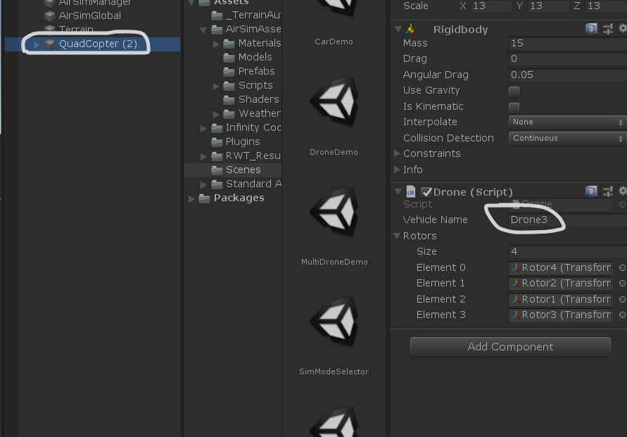

工作日志一
API 输入问题
1. 客户端：
F:\AirSim\AirLib\include\vehicles\multirotor\api\MultirotorRpcLibClient.hpp
msr -> airlib -> MultirotorRpcLibClient -> moveToGPSAsync
MultirotorRpcLibClient* moveToGPSAsync(float latitude, float longitude, float altitude, float velocity, float timeout_sec = Utils::max<float>(), DrivetrainType drivetrain = DrivetrainType::MaxDegreeOfFreedom, const YawMode& yaw_mode = YawMode(), float lookahead = -1, float adaptive_lookahead = 1, const std::string& vehicle_name = "");
2. 服务端：
F:\AirSim\AirLib\src\vehicles\multirotor\api\MultirotorRpcLibServer.cpp
msr -> airlib -> MultirotorRpcLibServer -> moveToGPS
(static_cast<rpc::server*>(getServer()))->bind("moveToGPS", [&](float latitude, float longitude, float altitude, float velocity, float timeout_sec, DrivetrainType drivetrain, const MultirotorRpcLibAdaptors::YawMode& yaw_mode, float lookahead, float adaptive_lookahead, const std::string& vehicle_name) -> bool {
return getVehicleApi(vehicle_name)->moveToGPS(latitude, longitude, altitude, velocity, timeout_sec, drivetrain, yaw_mode.to(),lookahead, adaptive_lookahead);
});
3. 服务端实现 getVehicleApi(vehicle_name) -> moveToGPS
F:\AirSim\AirLib\src\vehicles\multirotor\api\MultirotorApiBase.cpp
msr -> airlib -> moveToGPS
bool MultirotorApiBase::moveToGPS(float latitude, float longitude, float altitude, float velocity, float timeout_sec, DrivetrainTypedrivetrain,
const YawMode& yaw_mode, float lookahead, float adaptive_lookahead)
{
SingleTaskCall lock(this);
GeoPoint target;
target.latitude = latitude;
target.longitude = longitude;
target.altitude = altitude;
if (!std::isnan(getHomeGeoPoint().latitude) && !std::isnan(getHomeGeoPoint().longitude) && !std::isnan(getHomeGeoPoint()altitude)) {
vector<Vector3r> path{ msr::airlib::EarthUtils::GeodeticToNed(target, getHomeGeoPoint()) };
return moveOnPath(path, velocity, timeout_sec, drivetrain, yaw_mode, lookahead, adaptive_lookahead);
}
else {
vector<Vector3r> path{ Vector3r(getPosition().x(), getPosition().y(), getPosition().z()) };
return moveOnPath(path, velocity, timeout_sec, drivetrain, yaw_mode, lookahead, adaptive_lookahead);
}
}
客户端程序调用 API -> 客户端将消息封装为 msgpack-rpc 消息包发送出去，向服务端请求 -> 服务端通过 bind 绑定 ，返回 return getVehicleApi(vehicle_name)->moveToGPS
// GpsBase.hpp
struct GnssReport
{
GeoPoint geo_point;
real_T eph, epv; //GPS HDOP/VDOP horizontal/vertical dilution of position (unitless), 0-100% 。GPS HDOP/VDOP水平/垂直位置稀释度(单位无)，0-100%
Vector3r velocity;
GnssFixType fix_type;
uint64_t time_utc = 0;
};
struct Output
{ //same as ROS message
TTimePoint time_stamp;
GnssReport gnss;
bool is_valid = false;
};
// GpsSimple.hpp
Output output;
//GNSS 全球导航卫星系统
output.gnss.time_utc = static_cast<uint64_t>(clock()->nowNanos() / 1.0E3);
output.gnss.geo_point = ground_truth.environment->getState().geo_point;
output.gnss.eph = eph;
output.gnss.epv = epv;
output.gnss.velocity = ground_truth.kinematics->twist.linear;
output.is_valid = true;
卡顿问题
现在初步判断是 msgpack-rpc 协议的问题（线程）
设置更新问题
可以直接在 unity 中添加无人机（直接复制原先环境中的无人机），并更新 setting 设置，这个与引擎有关
注意 Vehicle Name 要与设置中的名字对应！

数据结构
client.getMultirotorState()
state: <MultirotorState>
{ 'collision':
<CollisionInfo> {'has_collided': False,
'impact_point': <Vector3r> {'x_val': 0.0, 'y_val': 0.0, 'z_val': 0.0},
'normal': <Vector3r> {'x_val': 0.0, 'y_val': 0.0, 'z_val': 0.0},
'object_id': -1,
'object_name': '',
'penetration_depth': 0.0,
'position': <Vector3r> {'x_val': 0.0, 'y_val': 0.0, 'z_val': 0.0},
'time_stamp': 0
},
'gps_location':
<GeoPoint> {
'altitude': 75.36256408691406,
'latitude': 47.64146799999126,
'longitude': -122.14021828176107
},
'kinematics_estimated':
<KinematicsState> {
'angular_acceleration':
<Vector3r> {
'x_val': 0.0,
'y_val': 0.0,
'z_val': 0.0
},
'angular_velocity':
<Vector3r> {
'x_val': 0.0,
'y_val': 0.0,
'z_val': 0.0
},
'linear_acceleration':
<Vector3r> {
'x_val': 0.0,
'y_val': 0.0,
'z_val': 0.0
},
'linear_velocity':
<Vector3r> {
'x_val': 0.0,
'y_val': 0.0,
'z_val': 0.0
},
'orientation':
<Quaternionr> {
'w_val': 1.0,
'x_val': 0.0,
'y_val': 0.0,
'z_val': 0.0
},
'position':
<Vector3r> {
'x_val': 0.0,
'y_val': -2.0,
'z_val': 47.63752365112305
}
},
'landed_state': 0,
'rc_data':
<RCData> {
'is_initialized': False,
'is_valid': False,
'left_z': 0.0,
'pitch': 0.0,
'right_z': 0.0,
'roll': 0.0,
'switches': 0,
'throttle': 0.0,
'timestamp': 0,
'vendor_id': '',
'yaw': 0.0
},
'timestamp': 1672127743136258048
}
client.getImuData()
imu_data: <ImuData>
{
'angular_velocity':
<Vector3r> {
'x_val': -0.002116621006280184,
'y_val': -0.001679769135080278,
'z_val': -0.001852852408774197
},
'linear_acceleration':
<Vector3r> {
'x_val': 0.005482715088874102,
'y_val': -0.025000527501106262,
'z_val': -9.773659706115723
},
'orientation':
<Quaternionr> {
'w_val': 1.0,
'x_val': 0.0,
'y_val': 0.0,
'z_val': 0.0
},
'time_stamp': 1672127743142258176
}
client.getBarometerData()
barometer_data: <BarometerData>
{
'altitude': 75.66569519042969,
'pressure': 100418.9375,
'qnh': 1013.25,
'time_stamp': 1672127743127257856
}
client.getMagnetometerData()
magnetometer_data: <MagnetometerData>
{
'magnetic_field_body':
<Vector3r> {
'x_val': 0.24865034222602844,
'y_val': 0.042973004281520844,
'z_val': 0.3683101236820221
},
'magnetic_field_covariance': [ ],
'time_stamp': 1672127743148258304
}
client.getGpsData()
gps_data: <GpsData>
{
'gnss':
<GnssReport> {
'eph': 0.11096888780593872,
'epv': 0.11096888780593872,
'fix_type': 3,
'geo_point':
<GeoPoint> {
'altitude': 75.36256408691406,
'latitude': 47.64146799999126,
'longitude': -122.14021828176107
},
'time_utc': 1672127742932253,
'velocity':
<Vector3r> {
'x_val': 0.0,
'y_val': 0.0,
'z_val': 0.0
}
},
'is_valid': True,
'time_stamp': 1672127742932253696
}
源码阅读 -> Assets\AirSimAssets\Scripts\Vehicles\Multirotor\Drone.cs
/*
无人机组件，用于控制场景中的无人机对象。这是基于与 AirLib 通信的 Vehicle 类。
这个类依赖于 AirLib 的基于 FastPhysics 引擎的无人机控制器。控制器正在按设置使用。Documents\AirSim . json文件
无人机可以通过键盘或通过客户端 api 调用来控制。
此数据通过 PInvoke 委托在 AirLib 和 Unity 之间不断交换。
*/
数据通过 PInvoke 委托在 AirLib 和 Unity 之间不断交换。
C# 与 C/C++的交互（PInvoke）